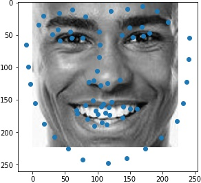
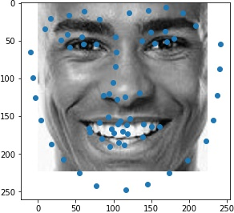
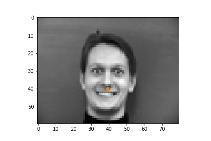
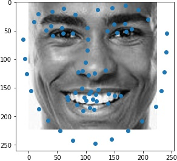

Use torch.utils.data.DataLoader to load the data. Reserve 20% for validation.
Create a CNN with torch.nn.Module with
torch.optim.Adam with learning rate 1e-3 and use loss function torch.nn.MSELoss
The tuning result is as follows:
In terms of the learning rate, 3e-3 plateaus in the beginning, indicating that the learning rate is too high.
5e-4 does not make too much progress, which means that it steps too slow and is trapped in a local minimum.
In terms of the batch sizes, batch size of 2 makes the training oscalates too much. Batch size of 16 makes the
training plateau too early.
| successful examples |  | |
| failed examples |
The successful cases are mainly the front face, which is standard and learned well by the network. The side facing images are prone to error. In the above examples, we can see that the network learned that the nose point is right under some shade, but was not good enough to tell apart different kinds of shade.
Use torch.utils.data.DataLoader to load the data. Reserve 20% for validation.
torchvision.transforms.ColorJittertorchvision.transforms.RandomAutocontrasttorchvision.transforms.RandomEqualizetorchvision.transforms.functional.rotate to rotate the imagestorchvision.transforms.functional.hflip to flip the imagesCreate a CNN with torch.nn.Module with
torch.optim.Adam with learning rate 1e-3torch.nn.MSELoss| successful examples | ||
| failed examples |
For the first failed example, it might be because the lighting is very strong which makes his face not
contrasting enough. So the network is hard to recognize the shadows.
For the second failed example, she has a lot more gestures than other people, which may have made it hard for the networks to recognize the points.
The following are the visualized filters:
Use ibug faces, resizing the bounding box crops to size 224 * 224. Though the labeling sometimes causes the landmarks to be outside of the bounding boxes, experimentally it is better not to do anything, because it mimics the situation in the test time. The following samples are shown with the bounding boxes enlarged for aesthetic reasons (specifically enlarging it such that it fits the circle with image center as the center, the largest distance between any key point and the image center as the radius).
Use torchvision.models.resnet18.
torch.optim.Adam with learning rate 1e-3torch.nn.MSELossVisualization of sampled results:
Results when running from images outside of ibug

For the first image, the network apparantly takes the hair edge as the jaw edge and recognizes the eyebrows as
eyes. This might be because that the cropping method for this image does not align with the method the dataset has used.
For the second image, the network is fairly accurate.
For the thrid image, the network overestimates the shape of the person's face, which should be thinner than
predicted.
Use the above trained networks and results to automatically detect key points to morph faces with the implementation from a previous project.